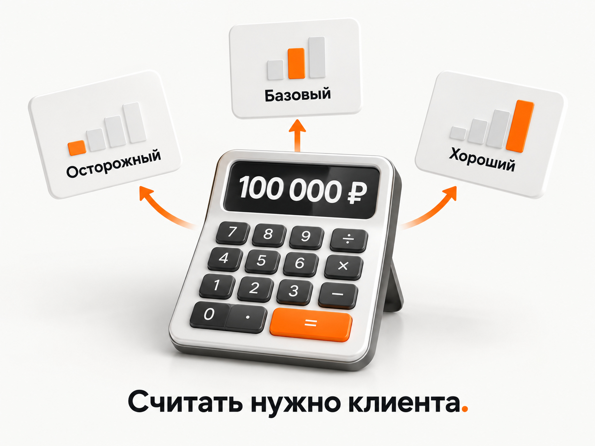
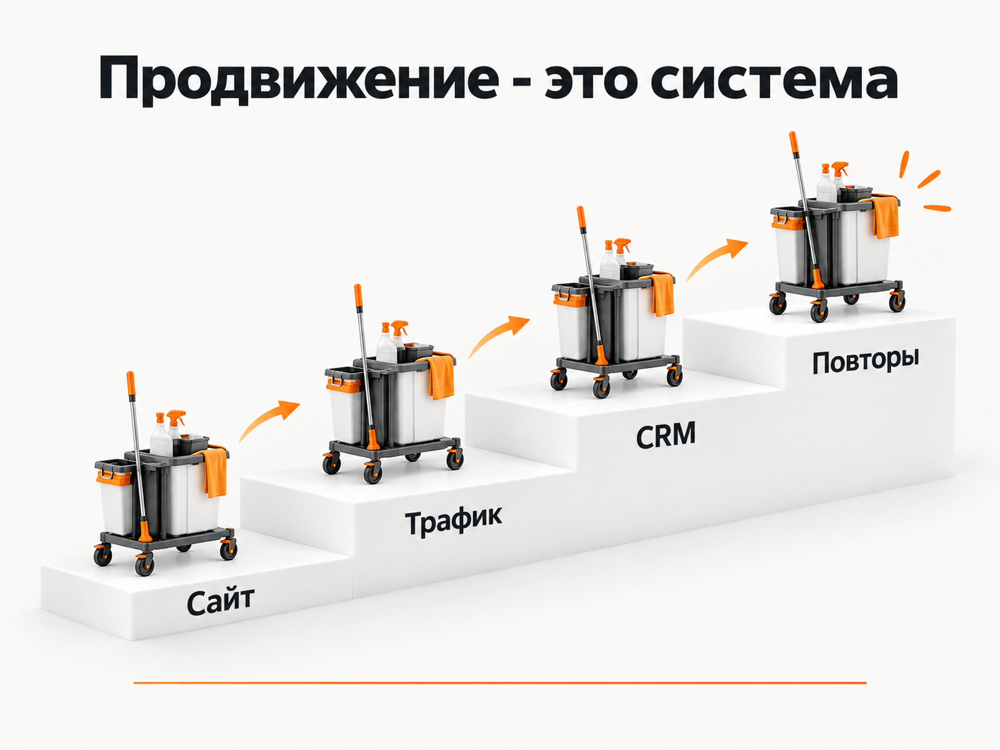

Блог о платном трафике
Продвижение клининговых услуг: инструкция и прогноз
Клининг в 2026 году остается растущим рынком, но сам по себе рост спроса еще не означает, что открыть клининговую компанию и купить рекламу будет выгодно.
По данным BusinesStat, оборот российского рынка клининга в 2025 году вырос на 11% и достиг 711 млрд рублей. При этом значительная часть роста связана не с кратным увеличением количества уборок, а с повышением тарифов из-за зарплат, стоимости химии, оборудования и других расходов. Корпоративный сегмент формирует более 80% оборота рынка.
Спрос со стороны частных клиентов тоже растет. По данным, которые приводил «Коммерсантъ», в январе-апреле 2025 года спрос на клининг на «Авито Услугах» увеличился на 21% год к году, на «Профи.ру» - на 15%. Количество чеков выросло на 16%, а средний чек - на 13%, до 3,4 тыс. рублей. Особенно активно рос спрос на отдельные работы, уборку после ремонта и химчистку.
То есть проблема клининга сейчас не в отсутствии клиентов. Главный вопрос другой:
можно ли привлечь клиента дешевле той прибыли, которую он принесет компании за все время работы?
Именно с этого я бы начинал продвижение клининговых услуг.
Этот материал не является моим кейсом клининговой компании. Я собрал актуальные открытые данные рынка, свежие кейсы продвижения клининга и текущие предложения компаний, а затем построил на их основе рабочую модель. Все прогнозные цифры ниже являются ориентирами, а не гарантированным результатом конкретной рекламной кампании.
Стоит ли вообще заходить в клининговый бизнес в 2026 году
Рынок достаточно большой и спрос есть. Но назвать клининг простым бизнесом я бы не стал.
Здесь одновременно существуют три фактора.
С одной стороны, уборку невозможно полностью заменить цифровым сервисом. Квартиры, офисы, производства, торговые площади и склады нужно обслуживать постоянно.
С другой стороны, конкуренция достаточно высокая. Только за январь-октябрь 2024 года в России было зарегистрировано почти 6 тыс. новых компаний и ИП в этой сфере. При этом рынок испытывает дефицит персонала, а клининговые компании конкурируют за сотрудников в том числе с доставкой, маркетплейсами и розницей.
Третья особенность - очень разная экономика разных видов уборки.
Поддерживающая уборка небольшой квартиры, уборка коттеджа после ремонта и промышленный контракт на несколько миллионов рублей называются одним словом «клининг», но с точки зрения маркетинга это практически три разных бизнеса.
Поэтому я бы не начинал с вопроса:
«Как рекламировать клининг?»
Сначала нужно ответить:
какой именно клининг мы собираемся продавать и сколько можем платить за нового клиента?
B2C и B2B клининг нужно разделять сразу
Я бы вообще рассматривал их как два самостоятельных направления.
B2C
Частный клиент может искать:
- поддерживающую уборку квартиры;
- генеральную уборку;
- уборку после ремонта;
- уборку перед переездом или после него;
- уборку дома;
- мойку окон;
- химчистку мебели;
- отдельные сложные работы.
Решение обычно принимается сравнительно быстро. Здесь особенно важны цена, свободное время, отзывы, возможность быстро оформить заказ, гарантии и доверие к людям, которых клиент пустит домой.
B2B
Бизнес ищет:
- регулярную уборку офисов;
- обслуживание бизнес-центров;
- уборку магазинов;
- клининг складов;
- обслуживание производств;
- промышленную уборку;
- мойку полов и оборудования;
- санитарную обработку;
- высотные работы;
- специальные виды клининга.
Здесь чек выше, но длиннее продажа. Клиент может запросить коммерческое предложение, осмотр объекта, документы, договор, НДС, требования к сотрудникам и оборудованию.
В одном свежем петербургском кейсе средний чек по квартирам составлял около 16 тыс. рублей, по офисам - 27 тыс., а промышленный заказ - около 400 тыс. рублей. Это не средние значения рынка, а показатели одной конкретной компании, но они хорошо показывают разницу между сегментами.
Поэтому смешивать B2C и B2B в одном прогнозе, одной посадочной странице и одной рекламной кампании я бы не стал.

Какие услуги сейчас интереснее с точки зрения продвижения
Если компания только выходит на рынок, я бы не пытался одинаково активно продвигать десятки услуг.
Для B2C интереснее направления, где выше чек или возможны повторные продажи:
- генеральная уборка;
- уборка после ремонта;
- регулярный клининг квартир и домов;
- химчистка как дополнительная услуга;
- мойка окон;
- уборка объектов перед сдачей или после арендаторов.
Для B2B наиболее интересны регулярные контракты и специальные работы:
- офисный клининг;
- склады;
- производство;
- торговые объекты;
- пищевые производства;
- уборка после строительства;
- специализированная очистка.
Услугу с разовым чеком 3-4 тыс. рублей значительно сложнее масштабировать платной рекламой, чем заказ на 15-20 тыс. или клиента, который возвращается каждый месяц.
Это не значит, что дешевую уборку нельзя рекламировать. Просто у нее должна сходиться другая экономика.
Какие сейчас цены на клининг
Единой средней цены по России нет. Москва, региональный город, частный клинер и крупная компания живут в совершенно разных ценовых диапазонах.
Если посмотреть открытые московские прайсы в сентябре 2026 года, поддерживающая уборка небольшой квартиры часто начинается примерно от 2,5-4,5 тыс. рублей. Генеральная - примерно от 5 тыс. рублей и выше. Уборка после ремонта часто считается по площади и может начинаться примерно от 200-250 рублей за квадратный метр.
Это именно предложения конкретных компаний, а не официальная среднерыночная статистика.
Для бизнеса полезнее определить собственный средний чек отдельно по каждому направлению:
| Услуга | Средний чек | Прямые затраты | Маржа до маркетинга | Повторяемость |
|---|---|---|---|---|
| Поддерживающая уборка | фактические данные | фактические данные | фактические данные | высокая |
| Генеральная | фактические данные | фактические данные | фактические данные | средняя |
| После ремонта | фактические данные | фактические данные | фактические данные | низкая |
| Офисы | фактические данные | фактические данные | фактические данные | высокая |
| Промышленный клининг | фактические данные | фактические данные | фактические данные | зависит от договора |
И уже после этого покупать рекламу.
Главная формула клининга - не CPL, а стоимость клиента
В рекламных кейсах часто показывают стоимость заявки.
Для клининга этого недостаточно.
Представим условную модель.
Средний заказ - 8 000 ₽.
После оплаты клинеров, химии, транспорта и остальных прямых расходов у бизнеса остается 3 000 ₽ до маркетинговых и постоянных расходов.
Из 10 нормальных лидов в заказ превращаются 3.
Получается:
максимальный CPL для окупаемости первого заказа = 3 000 × 30% = 900 ₽.
Если реклама приводит заявки по 2 000 ₽, первый заказ уже не окупает привлечение.
Но теперь допустим, что средний клиент за несколько месяцев делает 2,5 заказа.
3 000 × 2,5 = 7 500 ₽ маржинального дохода с клиента до маркетинга.
Тогда при той же конверсии 30% точка безубыточности заявки становится:
7 500 × 30% = 2 250 ₽.
Реклама по 2 000 ₽ уже может иметь экономический смысл.
Цифры здесь специально условные. Это не средняя маржинальность клининга.
Главный вывод другой:
для регулярного клининга LTV способен изменить допустимую стоимость рекламы в несколько раз.
Именно поэтому собирать базу клиентов и стимулировать повторные уборки иногда выгоднее, чем бесконечно пытаться снизить CPL на 200 рублей.
Похожая проблема была в свежем кейсе федерального клинингового сервиса. При среднем чеке около 6-7 тыс. рублей стоимость привлечения заказа доходила до 15 тыс. рублей. Проект становился выгодным только после нескольких уборок, а повторная работа с клиентами практически отсутствовала. После перестройки воронки в CRM появились отдельные процессы возврата клиентов и повторных продаж.
Стоимость привлечения клиента (CAC): как рассчитать и снизить

Сколько может стоить заявка на клининг из Яндекс Директа
Вот здесь я бы очень осторожно относился к любым «средним ценам заявки».
В свежих опубликованных кейсах разброс большой.
В федеральном клининговом сервисе после оптимизации была получена стоимость обращения около 2 562 ₽. Конверсия из клика в лид составляла 6,8%.
В проекте клининговой компании из Воронежа опубликован средний CPL 596 ₽ за трехлетний период работы.
В петербургском проекте стоимость лида со временем выросла примерно с 880 до 1 400-1 600 ₽, поскольку маркетинг сознательно сместился в более дорогой B2B и промышленный сегмент. Отдельный лид промышленного направления мог обходиться примерно в 5 000 ₽ при значительно большей стоимости сделки.
Получается диапазон от сотен до нескольких тысяч рублей.
Поэтому для предварительного B2C-прогноза я бы сейчас не рассчитывал бизнес на красивый CPL 500-800 ₽.
Для нового проекта безопаснее заложить в финансовую модель три сценария:
- оптимистичный - около 1 500 ₽ за обращение;
- базовый - около 2 000-2 500 ₽;
- осторожный - около 3 000 ₽ и выше.
Это не статистическое среднее по России, а рабочий диапазон для проверки экономики перед запуском на основании опубликованных результатов. Фактический CPL может оказаться как ниже, так и значительно выше.
Для B2B тем более нельзя ориентироваться на B2C. Лид по промышленному объекту может стоить 5 000 ₽, но контракт на сотни тысяч рублей делает такую цену совершенно нормальной.
Прогноз бюджета Яндекс Директ: как рассчитать расходы, клики и заявки
Пример прогноза на рекламный бюджет 100 000 рублей
Возьмем рекламный бюджет Яндекс Директа 100 000 ₽ в месяц.
Стоимость работы специалиста, сайт, CRM, телефония и остальные расходы сюда не входят.
| Сценарий | CPL | Примерно лидов | Лид → заказ | Примерно заказов | CAC |
|---|---|---|---|---|---|
| Осторожный | 3 000 ₽ | 33 | 20% | 7 | ~15 000 ₽ |
| Базовый | 2 200 ₽ | 45 | 30% | 14 | ~7 300 ₽ |
| Хороший | 1 500 ₽ | 67 | 40% | 27 | ~3 700 ₽ |
Сразу видно главное.
Если компания продает только разовую уборку за 5-7 тыс. рублей, даже вполне нормальная рекламная кампания может оказаться экономически невыгодной.
Если средний чек выше, клиент делает повторные заказы или реклама приводит крупные объекты, та же стоимость заявки превращается в рабочую.
Поэтому прогноз рекламы клининга без данных о среднем чеке, марже и конверсии отдела продаж практически бесполезен.
Какой бюджет я бы закладывал на Яндекс Директ
Здесь есть еще одна проблема.
Современные автостратегии Директа требуют статистики. Яндекс указывает минимум 10 конверсий в неделю для нормальной работы стратегии «Максимум конверсий». При оплате за конверсии недельный бюджет также должен быть не меньше десятикратной цены конверсии.
Если реальная заявка стоит около 2 000 ₽, десять заявок - это уже около 20 000 ₽ рекламных расходов в неделю.
То есть бюджет 20-30 тыс. рублей в месяц для конкурентного города может оказаться слишком маленьким не только для масштабирования, но даже для нормального обучения алгоритмов.
Это не означает, что рекламироваться с небольшим бюджетом нельзя.
На старте можно:
- собрать горячий поисковый спрос;
- не дробить статистику на десятки кампаний;
- протестировать ограниченное число самых маржинальных услуг;
- сначала накопить фактический CPC, CR и CPL;
- после этого переходить к оптимизации по конверсиям.
У регионального проекта с небольшим спросом структура вообще может быть значительно компактнее московской.
С чего начинать рекламу в Яндекс Директе
Для нового клинингового проекта я бы первым тестировал Поиск.
Причина простая: человек уже сформулировал потребность.
Например:
«генеральная уборка квартиры»
«уборка после ремонта»
«клининг офиса»
«уборка склада»
Это уже не холодная аудитория.
Но я бы обязательно разделял хотя бы:
- квартиры;
- дома;
- после ремонта;
- офисы;
- промышленный клининг;
- специализированные услуги.
Причина не только в объявлениях.
У каждой услуги своя цена, конверсия, средний чек и допустимый CPL.
Если все сложить в одну статистику, можно получить красивую среднюю цену заявки и не заметить, что дешевое направление съедает бюджет более прибыльного.
В петербургском B2B-кейсе Поиск Директа показывал конверсию около 8%, тогда как весь платный трафик с учетом РСЯ и Мастера кампаний - 3,97%. На конкретно этом проекте сети вообще не дали B2B-целей за анализируемый период. Это не универсальное правило для всей ниши, но хороший пример того, почему каналы нужно оценивать отдельно.
Как должен выглядеть сайт клининговой компании
Я бы не отправлял всю рекламу на одну страницу «Клининговые услуги».
Человек, который ищет уборку квартиры после ремонта, должен попасть на страницу именно этой услуги.
Человек, который ищет ежедневный клининг офиса, должен увидеть условия для бизнеса.
У хорошей коммерческой страницы я бы проверял:
- понятную цену или принцип расчета;
- что входит в уборку;
- что оплачивается отдельно;
- сколько человек приезжает;
- сколько примерно длится работа;
- свою ли химию и оборудование привозит компания;
- какие районы обслуживаются;
- реальные фотографии;
- отзывы;
- гарантии;
- договор;
- способы оплаты;
- быстрый способ связаться;
- калькулятор, если его действительно удобно использовать.
Последний пункт особенно интересен.
В одном из опубликованных клининговых кейсов основная часть заявок приходила через калькулятор. В другом федеральном проекте неправильно спроектированный калькулятор, наоборот, мешал конверсии: от пользователя требовали выбрать время начала уборки, хотя продолжительность услуги ему не объясняли.
Поэтому сам факт наличия калькулятора ничего не гарантирует.
Он должен облегчать заказ, а не создавать дополнительную анкету.
Скорость ответа может быть важнее очередной настройки Директа
Это один из самых практичных выводов из изученных мной кейсов.
В федеральном клининговом проекте конверсия из клика в лид была хорошей - 6,8%.
Проблема находилась дальше.
Менеджеры могли звонить через полчаса или вообще не перезвонить. В итоге часть оплаченного рекламой спроса просто терялась.
После аудита ввели правило перезвона в течение пяти минут.
Поэтому я бы отслеживал не только:
клик → лид,
но всю цепочку:
клик → лид → квалифицированный лид → связались → рассчитали стоимость → заказ → повторный заказ.
Если нормальные заявки не превращаются в уборки, бесконечная оптимизация ключевых слов проблему не решит.
Передавайте в рекламу реальные продажи
Когда заявок становится достаточно, следующий уровень - связать CRM с рекламой.
Например, отдельно передавать:
- целевой лид;
- состоявшийся расчет;
- подтвержденный заказ;
- оплату;
- повторный заказ.
Тогда алгоритм получает информацию не только о человеке, который нажал кнопку на сайте, но и о тех пользователях, которые реально стали клиентами.
Для клининга это особенно полезно, потому что дешевый лид и хороший клиент могут оказаться совершенно разными людьми.
Авито может оказаться очень сильным B2C-каналом
Я бы обязательно тестировал Авито отдельно от Директа.
Есть свежий кейс клининга в Новосибирске за апрель-май 2026 года:
- 54 активных объявления;
- 3 043 просмотра;
- 258 контактов;
- 35 027 ₽ расходов;
- около 136 ₽ за контакт.
Цифра выглядит очень сильной.
Но здесь есть принципиальное отличие.
Контакт на Авито нельзя автоматически сравнивать с заявкой на сайте или заказом.
Мы не знаем, сколько из 258 контактов:
- действительно подходили компании;
- были готовы покупать;
- заказали уборку;
- принесли прибыль.
Поэтому я бы воспринимал этот кейс не как обещание лида за 136 ₽, а как подтверждение того, что на Авито есть большой активный спрос на клининговые услуги.
Для B2C это канал, который точно заслуживает теста.
Яндекс Карты и локальный поиск
Клининг сильно привязан к территории.
Пользователь практически всегда ищет компанию, которая может приехать в конкретный район или город.
Поэтому необходимо полноценно оформить Яндекс Бизнес:
- услуги;
- фотографии;
- цены;
- график работы;
- телефон;
- сайт;
- территорию обслуживания;
- отзывы.
Работу с отзывами я бы вообще считал отдельной частью маркетинга.
Человек собирается пустить незнакомого исполнителя в квартиру или офис. Поэтому рейтинг, фотографии и реальные отзывы здесь влияют не только на видимость, но и на конверсию.
Региональность важна и для обычного SEO. Яндекс учитывает регион сайта при ранжировании геозависимых запросов.
SEO для клининговой компании
SEO в этой нише я бы запускал практически одновременно с платной рекламой.
Причина - большое количество коммерческих запросов.
Это не только «клининг Москва».
Есть:
- генеральная уборка;
- уборка после ремонта;
- уборка квартир;
- уборка домов;
- клининг офисов;
- уборка складов;
- мойка окон;
- промышленный клининг;
- химчистка;
- конкретные специализированные работы.
Под каждое реальное направление можно создавать отдельную сильную страницу.
Для локального бизнеса также работают географические запросы, но здесь нельзя просто автоматически создать сотни одинаковых страниц «клининг район X», заменив название района.
Каждая страница должна соответствовать реальной услуге и реально обслуживаемой территории и содержать полезную информацию.
Свежий кейс из Санкт-Петербурга показывает потенциал этого направления. После запуска нового сайта органический поиск за первый месяц дал конверсию в цель 5,6%, а Поиск Директа - 8%. Автор построил структуру вокруг отдельных услуг и географии. Это результат одной конкретной компании, но он хорошо показывает, почему SEO в клининге не стоит откладывать на несколько лет.
Социальные сети я бы не ставил первым каналом
Для обычного клининга я не начинал бы продвижение с попытки регулярно покупать холодный трафик из социальных сетей.
У Поиска, Авито и Карт есть большое преимущество - человек уже ищет уборку.
Социальные сети полезнее использовать как слой доверия:
- реальные объекты;
- фото до и после;
- сложные загрязнения;
- процессы уборки;
- команда;
- отзывы;
- объяснение технологий.
Для некоторых услуг там можно найти рабочую рекламу, но я бы переходил к ней после проверки горячего спроса.
Что еще может давать клиентов
Есть несколько каналов, которые часто недооценивают.
Для уборки после ремонта очевидные партнеры:
- ремонтные бригады;
- дизайнеры интерьеров;
- строительные компании;
- управляющие новостройками.
Для квартир:
- риелторы;
- посуточная аренда;
- управляющие объектами;
- собственники нескольких квартир.
Для B2B:
- управляющие компании;
- бизнес-центры;
- девелоперы;
- производство;
- складские комплексы;
- тендеры;
- прямые продажи.
Повторные продажи могут быть самым прибыльным каналом
Нового клиента приходится покупать.
Повторного клиента уже не нужно второй раз привлекать через рекламный аукцион.
Поэтому после каждой выполненной уборки я бы сохранял:
- тип объекта;
- дату;
- услугу;
- сумму;
- источник клиента;
- следующую вероятную потребность.
После генеральной уборки можно предложить регулярную.
После ремонта - поддерживающую.
Офису - постоянное обслуживание.
Клиенту с диваном - химчистку других предметов.
Через несколько месяцев - повторную услугу.
Именно здесь обычная клининговая компания начинает превращаться из бизнеса по продаже отдельных уборок в бизнес по работе с клиентской базой.

Что я бы запускал с нуля в B2C
Если бы сегодня нужно было запустить новую клининговую компанию для частных клиентов, мой порядок был бы таким.
1. Выбрать 2-4 услуги
Не двадцать.
Например:
- генеральная уборка;
- после ремонта;
- поддерживающая;
- химчистка как допродажа.
2. Посчитать экономику
По каждой услуге:
чек → прямые расходы → маржа → повторные покупки → допустимый CAC → допустимый CPL.
До рекламы, а не после.
3. Сделать хорошие посадочные страницы
Отдельная страница под каждый основной вид спроса.
4. Настроить Яндекс Метрику, телефонию и CRM
Все обращения должны попадать в одно место.
5. Запустить Яндекс Поиск
Сначала самые горячие коммерческие запросы.
6. Запустить Авито
Отдельные объявления под разные услуги и сценарии.
7. Полностью оформить Яндекс Карты
И системно собирать отзывы.
8. Начать SEO
Не ждать, пока Директ станет дорогим.
9. Построить повторные продажи
Иначе придется каждый месяц заново покупать практически весь поток клиентов.
Что я бы запускал в B2B
Для B2B логика другая.
Я бы начал с определения конкретного типа объекта.
Например, не «клининг для бизнеса», а:
- ежедневная уборка офисов;
- промышленные предприятия;
- склады;
- пищевые производства;
- магазины.
Дальше:
- отдельная посадочная под направление;
- Поиск Яндекс Директа;
- SEO;
- CRM и запись звонков;
- передача квалификации обратно в аналитику;
- прямые продажи;
- партнерства;
- тендерные каналы;
- кейсы и подтверждение опыта.
В B2B пять лидов по 5 000 ₽ способны быть намного ценнее пятидесяти заявок по 500 ₽.
В уже упомянутом петербургском проекте конверсия из лида в промышленный контракт была около 15%, стоимость такого лида - около 5 000 ₽, а валовая выручка одной промышленной сделки - около 400 тыс. ₽.
Когда я бы не заходил в клининг
Я бы очень осторожно относился к запуску, если бизнес-модель выглядит так:
«Наймем несколько клинеров, сделаем сайт, дадим рекламу и будем брать любые заказы».
Особенно если одновременно:
- нет надежных исполнителей;
- прибыль с одного заказа маленькая;
- компания собирается конкурировать только низкой ценой;
- повторные продажи не предусмотрены;
- собственник не знает прямую себестоимость уборки;
- нет человека, который быстро отвечает на обращения;
- нет контроля качества;
- нет запаса денег на тестирование рекламы;
- реклама должна окупиться с первого клиента при низком чеке.
В такой модели проблема появляется не в рекламном кабинете.
Маркетинг просто быстрее приводит бизнес к тому месту, где у него не сходится экономика.
Когда клининг выглядит перспективнее
Я бы смотрел на нишу значительно позитивнее, если есть хотя бы несколько преимуществ:
- хорошая стоимость выполнения работ;
- сильная команда;
- возможность брать более дорогие заказы;
- специализация;
- хорошие отзывы;
- повторный спрос;
- B2B-контракты;
- высокая скорость обработки;
- территория с достаточным спросом;
- возможность постепенно строить SEO;
- CRM и контроль продаж.
Особенно интересна связка:
дорогая первая услуга → качественное выполнение → регулярная уборка → дополнительные услуги → рекомендации.
Тогда платная реклама покупает не одну уборку, а нового клиента.
Как оценить свой город до запуска
До открытия компании я бы потратил несколько дней на исследование.
Спрос
Посмотрите через Яндекс Вордстат:
- клининг + город;
- уборка квартир;
- генеральная уборка;
- после ремонта;
- уборка офисов;
- остальные выбранные услуги.
Проверьте сезонность.
В одном свежем кейсе отмечался рост поискового спроса примерно с мая, хотя заявки поступали круглый год.
Конкуренция
Посмотрите первые страницы Яндекса:
- рекламу;
- органическую выдачу;
- Карты;
- Авито.
Запишите:
- цены;
- отзывы;
- сроки;
- офферы;
- гарантии;
- количество конкурентов.
Экономика
После этого составьте собственную модель.
Например:
Средний чек: 10 000 ₽
Прямые расходы: 6 000 ₽
Остается до рекламы: 4 000 ₽
Конверсия лида в заказ: предполагаем 30%
Точка безубыточности CPL первого заказа:
4 000 × 30% = 1 200 ₽.
Если предварительно реклама получается по 2 500 ₽, есть четыре варианта:
- увеличить чек;
- увеличить маржу;
- улучшить конверсию в заказ;
- получать повторные продажи.
Если нельзя сделать ничего из этого, значит, платное привлечение в текущей модели может не сойтись.
Это значительно полезнее, чем сначала потратить 100 тыс. рублей и только потом обнаружить проблему.
Мой прогноз по продвижению клининга в 2026 году
Я не вижу признаков того, что клининговые услуги становятся ненужными. Наоборот, рынок продолжает расти, а по итогам 2025 года его оборот достиг 711 млрд рублей.
Но я бы не воспринимал это как сигнал «надо срочно открывать клининг».
Основные сложности тоже вполне реальные:
- высокая конкуренция;
- дорогой персонал;
- дефицит сотрудников;
- рост стоимости расходников;
- сильная зависимость качества от исполнителя;
- дорогая закупка нового клиента;
- необходимость быстро обрабатывать заявки.
Для небольшого B2C-проекта я бы особенно внимательно смотрел на средний чек и повторные заказы.
Для компании с сильным B2B-направлением экономика потенциально интереснее, но там уже нужны продажи, документы, кейсы, процессы и способность выполнять крупные контракты.
С точки зрения продвижения ниша хорошая.
У нее есть сформированный поисковый спрос, локальный поиск, Авито, SEO, повторные продажи и партнерские каналы. То есть бизнес не зависит от одного единственного источника клиентов.
Но стратегия «запустить Директ и ждать дешевых заявок» здесь слишком примитивна.
Рабочая модель выглядит так:
спрос → правильная услуга → экономика → сайт → трафик → заявка → быстрый контакт → заказ → качественная уборка → повторный заказ.
Если эта цепочка сходится по цифрам, клининг можно достаточно системно масштабировать.
Если экономика не сходится уже на первых четырех этапах, реклама ее не исправит.
На чем основан прогноз
Для этого разбора я использовал данные рынка и открытые материалы, доступные на сентябрь 2026 года: исследование BusinesStat по рынку клининга, данные «Коммерсанта» со статистикой Авито Услуг, Профи.ру, Чек Индекса и YouDo, материалы Яндекс Рекламы, открытые прайсы клининговых компаний и несколько опубликованных в 2026 году кейсов продвижения клининга через Яндекс Директ, SEO и Авито.
Цифры из кейсов я использую только как диапазоны и примеры. Чужой CPL, средний чек или конверсию нельзя механически переносить в финансовый план конкретной клининговой компании.